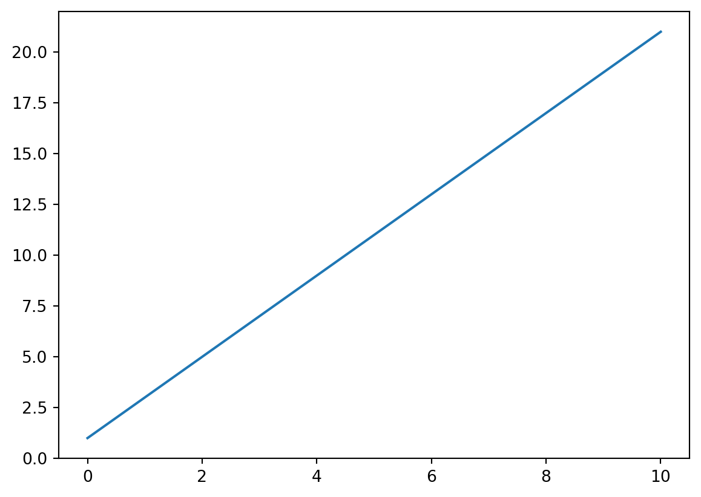

import numpy as np
import matplotlib.pyplot as plt
x = np.linspace(0, 10, 100)
m, b = 2, 1
y = m * x + b
plt.plot(x, y)
plt.show()
Austin Tripp
May 10, 2026
A colleague recently introduced me to Quarto and I can’t believe I didn’t know about it sooner! Quarto is a document compiler- you write plain text files in .qmd and compile them to many output formats- pdf, html, slides, etc. For the kinds of writing I do, it feels like a strict upgrade from a set of tools I’ve already been using:
$...$ math blocks and basic equation/section numbering, and will compile to a decent looking pdf by default. Importantly, it doesn’t require 20 lines of boilerplate document formatting code and imports to set up a template..qmd file (only in the compiled outputs).Arguably it’s already a replacement for LateX and jupyter independently for most of what I do. However, the killer advantage is that it’s the first tool I’ve used which meaningfully combines LateX and jupyter: you can get documents with sections / equation numbers / figure numbers, but also contain executable code. For example, here’s2 a minimal .qmd file that uses all these features.
---
title: "Linear plot"
---
The equation of a line is
$$
y = mx + b \ .
$$ {#eq-line}
@fig-line plots @eq-line with $m=2$, $b=1$.
```python
#| label: fig-line
#| fig-cap: "Plot of $y = mx + b$ with $m=2$, $b=1$."
import numpy as np
import matplotlib.pyplot as plt
x = np.linspace(0, 10, 100)
m, b = 2, 1
y = m * x + b
plt.plot(x, y)
plt.show()
```Here’s how that renders in an actual post:
y = mx + b \ . \tag{1}
Figure 1 plots Equation 1 with m=2, b=1.

In fact, the type of short technical documents that I sometimes write on this blog are a perfect use case for Quarto, so I actually just refactored my website to use it!3 So, as a consequence, expect to see better technical publishing on this blog. I also imagine I’ll use quarto a lot more to write internal technical memos at work too.
If you are a researcher like me who wants to write short technical documents with good code rendering, I highly recommend giving Quarto a try!
Abstracting away the complexity that markdown itself does not have a unified syntax and there are several variants. Looks like Quarto is based on pandoc markdown.↩︎
Technically the word python should be surrounded with curly braces. I had to sacrifice accuracy a bit to preview quarto syntax within a quarto document without that syntax actually being used and compiled!↩︎
More details in this other post↩︎
@online{tripp2026,
author = {Tripp, Austin},
title = {Quarto Is Great!},
date = {2026-05-10},
url = {https://austintripp.ca/blog/2026-05-10-quarto-is-great/},
langid = {en}
}